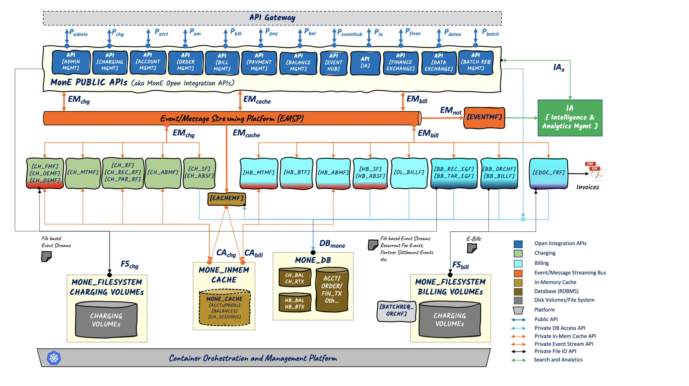
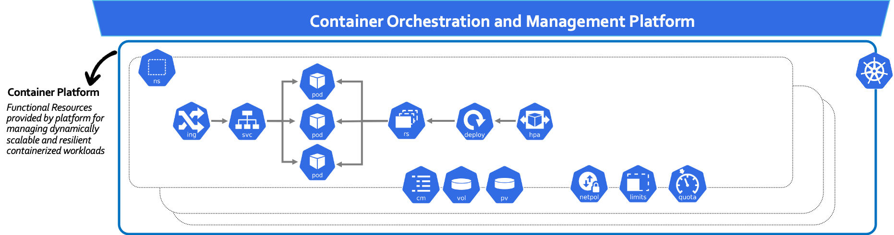
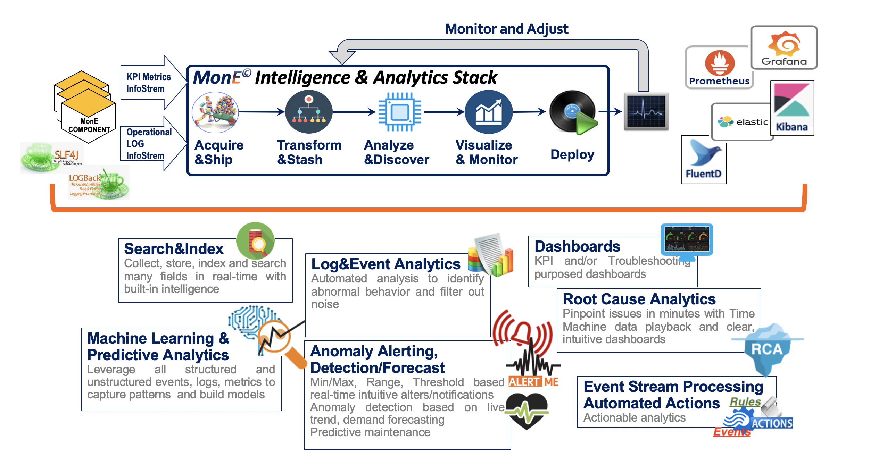

MonE L2 Architecture
The goal of L2 Architecture section is to provide further details from an architectural role&responsibility viewpoint on MonE Platform Components that constitute the MonE Platform domains detailed in MonE L1 Architecture.
Each MonE Platform Component is a cloud native, self-contained and containerized Managed Entity (Ref. [6]) that fulfills a business function inline with its role&responsibilities within the L2 architecture. MonE Platform Component(s) are integrated with each other over standard interfaces which are further specified per Reference Point in APIs View.
The following diagram depicts MonE Level 2 Architecture.
.

Figure-1: MonE L2 Architecture: System Components
The following sections further detail the MonE Platform Components from a L2 architecture perspective.
1. Platform Functional Domains
1.1. MonE Public APIs Domain
The purpose of this subsection is to provide a detailed L2 overview, highlighting the MonE Platform Components and design principles of the MonE components that constitute this domain and how these components interact with each other and other domain components. The interdependencies are depicted as highlighted in above Figure-1 with relevant arrows and associations drawn.
1.1.1. Scope
In this functional domain, MonE Platform components implement the functionality exposed by Public APIs to external client(s) as specified in APIs View.
Info
The following list provides a list of Public API components denoted by Px that relate to this domain. Each Px is implemented as a set of closely related APIs/microservices that expose the relevant functionality to external clients.
- Padmin: Admin Management provide administrative and configurative operations for managing charging and billing, such as; defining charging tariffs, stream, monetization templates, billing aggregation templates etc.
- Pchg: Charging Management provide online/offline charging operations
- Pacct: Account Management provide billing account management capabilities
- Pom: Order Management provide order based integration capabilities for order driven and/or subscription based businesses
- Pbill: Bill Management provide account bill management services such as; bill inquiry, on-demand, bill adjustment etc.
- Pbal: Balance Management provide balance lifecycle, adjustment and/or refill management capabilities. It also provides bill cycle aligned credit-control and/or discount balance management services
- Ppay: Payment Management provide capabilities for registering financial transactions to MonE billing such as; payments, deposits etc.
- Peventhub: Event Hub provides capabilities for external clients to create hub resources and register listeners/callbacks and thus subscribe to and be notified of interested events generated by MonE components.
- Pia: Intelligence and Analytics Management provides capabilities for operationally tracking/monitoring MonE system from transactional and KPI perspectives.
- Pfinex: Finance Information Exchange provides capabilities to export bill data, post payment data, syncing/journalizing transactional data to external finance or accounting systems
- Pdatex: Data Exchange provides capabilities to export/import critical entity model definitions to/from MonE such as; GL definitions, tax definitions, monetization models, Discount related Balance Packages etc.
- Pbatch: Batch Request Management provides batch request management APIs for back office operations such as; bulk billing account updates, bulk order/subscription updates, bulk payment registrations etc.
1.1.2. Components Map
The following table depicts the MonE components that constitute this domain. It also provides details with regards to how self-contained MonE components work in harmony by listing for each component: the Public/Private APIs supported by that component and related components (considering the information flow within the MonE Platform). Please refer to APIs View for detailed specification of referenced Public and Private APIs.
For further details about each component, details on component level processing logic including cache/database and or file system dependencies, component level configuration map attributes and alike, please refer to Component Catalog.
| Component | Description | Public API |
Private API |
Related Components |
|---|---|---|---|---|
| API Admin Management | Provides charging and billing administration services, such as defining charging streams, tariffs, stream conversion maps or billing aggregation templates, billing cycle specifications etc. |
MonE_Padmin_Radm, MonE_Padmin_Badm |
EMSP, MonE_DB, CACHEMF |
|
| API Charging Management | Provides online/offline charge request management services |
MonE_Pchg_Rf, MonE_Pchg_Ro |
MonE_EMchg_Offline, MonE_EMchg_Online |
CH_FMF, CH_OMF, CH_SMF EMSP, MonE_DB, CACHEMF |
| API Account Management | Provides B2C/B2C: Billing/Party account management services |
MonE_Pacct_Acct |
MonE_EMcache_Dr |
EMSP, MonE_DB, CACHEMF |
| API Order Management | Provides account order management services for billing scenarios that require order lifecycle (for subscription and/or purchase based monetization strategies) |
MonE_Pom_Order |
MonE_EMchg_Offline, MonE_EMcache_Dr |
CH_FMF, EMSP, MonE_DB, CACHEMF |
| API Bill Management | Provide account bill management services such as; bill inquiry, on-demand, bill adjustment etc. |
MonE_Pbill_Bacct |
MonE_EMbill_Convergent |
OL_BILLF EMSP, MonE_DB |
| API Payment Management | Provides payment/financial transaction management services to register: payments, deposits etc. into MonE Platform |
MonE_Ppay_Ftx |
EMSP, MonE_DB |
|
| API Balance Management | Provides account balance management services for online charging authorization and credit management purposes, balance adjustments/refills or for application of complex discounts based on aggregated usage. It also provides bill cycle aligned credit-control and/or discount balance management services. |
MonE_Pbal_Chg MonE_Pbal_Bill |
MonE_EMchg_Convergent, MonE_EMbill_Convergent |
CH_ABMF, HB_ABMF EMSP |
| API Event Hub | Provides services for external clients to create hub resources and register listeners/callbacks and thus subscribe to and be notified of interested events generated by MonE components. |
MonE_Peventhub_Em |
EMnot |
EVENTMF EMSP, MonE_DB |
| API IA | IA (Intelligence & Analytics). Provides services for for operationally tracking/monitoring MonE system from transactional and KPI perspectives. |
MonE_Pia_Kpi MonE_Pia_Tx |
IAx |
Intelligence&Analytics Mgmt. 3PP:Elasticsearch, 3PP:Prometheus |
| API Finance Exchange | Provides services to export bill data, post payment data, syncing/journalizing transactional data to external finance or accounting systems. |
MonE_Pfinex_Exchg |
BATCHREQ-ORCHF MonE_DB |
|
| API Data Exchange | Provides services to export/import critical entity model definitions to/from MonE such as; GL definitions, tax definitions, monetization models, Discount related Balance Packages etc. |
MonE_Pdatex_Exchg |
BATCHREQ-ORCHF MonE_DB |
|
| API Batch Request Management | Provides batch request management services for back office operations such as; bulk billing account updates, bulk order/subscription updates, bulk payment registrations etc. |
MonE_Pbatch_Acct |
BATCHREQ-ORCHF MonE_DB |
1.2. MonE Charging Domain
The purpose of this subsection is to provide a detailed L2 overview, highlighting the MonE Platform Components and design principles of the MonE components that constitute this domain and how these components interact with each other and other domain components. The interdependencies are depicted as highlighted in above Figure-1 with relevant arrows and associations drawn.
1.2.1. Scope
In this functional domain, MonE Platform components implement the back-end MonE Charging functionality.
Info
The following list provides the most critical functionality that relate to components of this domain:
- Offline/Online Mediation Functional Components that allow ingestion of any charging even data stream input, associate it with a previously defined stream and issue relevant stream data conversion as per configured business terminology by the MonE user. The converted data is streamed into Convergent Charging Components.
- Convergent Charging Components
- Apply Charging Monetization Template Models for the relevant Stream that determines: what fields to be used as party and/or product identifiers, how many parties to be charged, how many charge items to be created, type of party roles (B2B, B2C), which tariffs to be used while creating charges etc.
- Issue rating for each charge item as per Monetization Template config
- Issue balance based/aggregated complex and/or cross discounts if available
- Store the rated transactions into MonE Database
- Store the balance updates into MonE Database
- Stream the charged transaction for further processing by MonE Billing
1.2.2. Components Map
The following table depicts the MonE components that constitute this domain. It also provides details with regards to how self-contained MonE components work in harmony by listing for each component: the Public/Private APIs supported by that component and related components (considering the information flow within the MonE Platform). Please refer to APIs View for detailed specification of referenced Public and Private APIs.
For further details about each component, details on component level processing logic including cache/database and or file system dependencies, component level configuration map attributes and alike, please refer to Component Catalog.
| Component | Description | Public API |
Private API |
Related Components |
|---|---|---|---|---|
| CH_FMF | Charging-File Mediation Function Provides event driven services for offline charging data ingestion and mediation into the MonE Charging subsystem. |
MonE_EMchg_Offline, CA_chg_api |
CH_MTMF, EVENTMF EMSP |
|
| CH_OEMF, CH_OSMF |
Charging-Online Event Mediation Function, Charging-Online Session Mediation Function Provides event driven services for online charging data ingestion and mediation into the MonE Charging subsystem for online Event based and Session based charging respectively. |
MonE_EMchg_Online, CA_chg_api |
CH_MTMF, EVENTMF EMSP |
|
| CH_MTMF | Charging-Monetization Template Management Function Provides event driven services for Monetization Template Management (identification and application) that controls and orchestrates the charging subsystem processing logic for the subsequent components of the charging chain. |
MonE_EMchg_Convergent, CA_chg_api |
CH_RF, CH_RECRF, EVENTMF EMSP |
|
| CH_RF, CH_REC_RF CH_PAR_RF |
B2C: Charging-Rating Function (Onetime/Usage), Charging Recurrent Rating Function Provides event driven services for rating of event/usage (CH_RF) and recurrent charges (CH_REC_RF) for each party/product as determined by applied Monetization Template for the B2C accounts. B2B: Charging-Partner Rating Function (Onetime/Recurrent/Usage) Provides event driven services for rating of event/recurrent/usage charges for the partners to be used within revenue sharing and settlement processing logic as per applied Monetization Template. |
MonE_EMchg_Convergent, CA_chg_api |
CH_ABMF, EVENTMF EMSP |
|
| CH_ABMF | Charging-Account Balance Management Function Provides event driven services for balance management. For online charging; balance management denotes both monetary balances used for session/event based credit-control/authorization as well as other accumulator balances that may be used for discounting purposes. For offline charging balance management mainly denotes accumulator balances used for discounting purposes. Once B2C charges and discounts applied (for online charging at the end of event/session), if there exists B2B parties as determined by applied Monetization Template, then the module publishes a clone of charged transaction for further processing by CH_PAR_RF that calculates the charges for the B2B partner. Delta update requests of all impacted balance record streams are published on EMSP for further processing by CH_ABSF to be persisted on MonE_DB. Rated and balance logic applied charged record streams are published on EMSP for further processing by CH_SF to be persisted on MonE_DB. |
MonE_EMchg_Convergent, CA_chg_api |
CH_PAR_RF, CH_ABSF, CH_SF, EVENTMF EMSP |
|
| CH_SF, CH_ABSF |
Charging-Storage Function, Charging Account Balance Storage Function Provides event driven services for persisting charged transactions and balance updates on MonE_DB. | MonE_EMchg_Convergent |
EVENTMF EMSP, MonE_DB |
1.3. MonE Billing Domain
The purpose of this subsection is to provide a detailed L2 overview, highlighting the MonE Platform Components and design principles of the MonE components that constitute this domain and how these components interact with each other and other domain components. The interdependencies are depicted as highlighted in above Figure-1 with relevant arrows and associations drawn.
1.3.1. Scope
In this functional domain, MonE Platform components implement the back-end MonE Billing functionality.
Info
The following list provides the most critical functionality that relate to components of this domain:
- Hot-Billing Chain
- Apply Billing Monetization Template Models for the relevant Stream that determines: the party to be billed considering split billing rules
- Issue different levels of aggregation for each of: bill line items, GLCODE items, TAX items, external cost center items
- Issue balance based bill time discounts based on aggregated bill line items over a bill cycle period
- Store the aggregated items into MonE Database
- Store the bill time balance updates into MonE Database
- On-Demand Bill generation
- Batch-Bill
- Batch Bill generation by consolidating aggregated items that are the output of hot-billing
- Batch Bill Event Generation Functions for periodic recurrent charge events generation, partner revenue sharing events generation for scenarios that require revenue settlement after customer payment.
- Invoice Electronic Document Formatting and Rendering
1.3.2. Components Map
The following table depicts the MonE components that constitute this domain. It also provides details with regards to how self-contained MonE components work in harmony by listing for each component: the Public/Private APIs supported by that component and related components (considering the information flow within the MonE Platform). Please refer to APIs View for detailed specification of referenced Public and Private APIs.
For further details about each component, details on component level processing logic including cache/database and or file system dependencies, component level configuration map attributes and alike, please refer to Component Catalog.
| Component | Description | Public API |
Private API |
Related Components |
|---|---|---|---|---|
| HB_MTMF | HotBill-Monetization Template&Aggregation Function Provides event driven services for Monetization Template Management (identification and application) that controls and orchestrates the hot-billing subsystem processing logic for the subsequent components of the billing chain. As part of billing Monetization Template Management, the module is responsible in resolving the aggregation keysets to be applied considering the following financial perspectives:
|
MonE_EMbill_Hotbill, CA_bill_api |
HB_BTF, EVENTMF EMSP |
|
| HB_BTF | HotBill-Billing&Taxation Function Provides event driven services for bill itemization based on applied Billing Monetization Template, resulting in actual bill items for each Charge Item considering different perspectives of aggregation. Depending on configuration of the hot billing chain, if external taxation calculation is required (overriding or compensating lack of taxInfo in orders), this module is responsible for calculation of aggregated bill item taxes. |
MonE_EMbill_Hotbill, CA_bill_api |
HB_ABMF, EVENTMF EMSP |
|
| HB_ABMF | HotBill-Account Balance Management Function Provides event driven services for balance management. HotBill phase balance management denotes bill time discounts based on aggregated bill line items over a bill cycle period as per configured balance packages Delta update requests of all impacted balance record streams are published on EMSP for further processing by HB_ABSF to be persisted on MonE_DB. HotBill record streams are published on EMSP for further processing by HB_SF to be persisted on MonE_DB. |
MonE_EMbill_Hotbill, CA_bill_api |
CH_ABSF, CH_SF, EVENTMF EMSP |
|
| HB_SF, HB_ABSF |
HotBill-Storage Function, HotBill Account Balance Storage Function Provides event driven services for persisting hotbilled transactions and balance updates on MonE_DB. | MonE_EMbill_Hotbill |
EVENTMF EMSP, MonE_DB |
|
| OL_BILLF | OnLineBill-Bill Function Provides event driven services for generation of on-demand and/or quotation bills. | MonE_EMbill_Hotbill |
API Bill Management, EVENTMF EMSP, MonE_DB |
|
| BB_REC_EGF, BB_TAR_EGF |
BatchBill-Recurrent Events Generation Function, BatchBill-TariffUpdate Events Generation Function Provides event driven services for generation of chargeable events as input to MonE Charging subsystem. BB_REC_EGF is to be invoked explicitly as part of periodic account management operational procedures that creates events per each subscription for the next bill cycle period for all impacted billing accounts. Note that shall there be changes in subscription within the billcycle period, an update order submitted via API Order Management Public API module will trigger the relevant update event as input into Charging subsystem which (via CH_REC_RF) in turn will generate the DELTA corrective charge for proration as per configured. BB_TAR_EGF is to be invoked as part of tariff lifecycle management operational procedures in case if there exists a a new tariff update that impacts already streamed and rated recurrent charges (as per a previous BB_REC_EGF run). Thus, BB_TAR_EGF will generate the DELTA corrective charge for proration of recurrent charges due to tariff amount update for all impacted billing accounts. | MonE_EMchg_Convergent |
EVENTMF EMSP, MonE_DB |
|
| BB_ORCHF, BB_BILLF |
BatchBill-Orchestration Function, BatchBill-Bill Function Provides event driven services for generation of actual XML or JSON bill documents based on the already aggregated invoice, tax and GLCODE items on MonE_DB as well as other financial transactions (payments, deposits, etc.) registered into the MonE_DB through Public APIs. BB_ORCHF is responsible for analyzing the impacted billing accounts for a bill-run on a specific billcycle. Considering the account type (individual or part of corporate hierarchy), BB_ORCHF publishes batch bill generation events on EMSP to be processed by multiple BB_BILLF instances. Each bill generation event contains a set/batch of multiple accounts to be billed (number of accounts/package depends on system configuration) that allows maximum throughput and concurrency. BB_ORCHF also keeps track of on-going number of active in-process packages within the batch bill subsystem, thus depending on configuration, BB_ORCHF throttles subsystem load load by not feeding the system more than a pre-configured number of in-process packages. BB_BILLF is responsible for processing batch bill generation request events and generation of bill documents. | MonE_EMbill_Hotbill |
EVENTMF EMSP, MonE_DB |
|
| EDOC_FRF | Electronic Document-Format and Render Function Provides event driven services for conversion/formatting of electronic bills generated by BB_BILLF or OL_BILLF modules and generation of invoice documents in HTML, PDF formats. EDOC_FRF processes XML/JSON based electronic bills generated by MonE Billing subsystem. It is responsible for formatting, enrichment (as per configuration) and rendering of these electronic bills into printable of viewable invoice documents in HTML or PDF. | MonE_EMbill_Hotbill |
EVENTMF EMSP, MonE_DB |
2. Data Access and Exchange Domain
2.1. Scope
MonE Data Access and Exchange Domain comprises the 3PP components that provide the following end-to-end capabilities for the entire MonE Platform.
2.2. Components Map
The following table depicts the 3PP components that constitute this domain.
| Component | Description | Public API |
Private API |
Related Components |
|---|---|---|---|---|
| MonE_DB | MonE Database (RDBMS) MonE Database is the persistent relational data store storage layer (RDBMS) that provides JDBC based access to MonE components. The 3PP RDBMS system to implement MonE_DB is PostgreSQL. The high-level areas of information that reside within MonE_DB are as the following:
|
PostgresSQL JDBC API | ||
| EMSP | MonE Event/Message Streaming Platform (EMSP) EMSP domain provides the distributed, highly-scalable, durable and high-ingress event data streams broker services for reliable and fast exchange of information among MonE Charging and Billing components. The default 3PP EMSP system to implement MonE-EMSP is Kafka. Utilization of Kafka as EMSP for event-driven back-end MonE components result in the following benefits:
|
Apache Kafka API (binary over TCP) |
||
| MonE_InMem_Cache | MonE MonE In-Memory Cache MonE In-Memory Cache provides a relational distributed data grid that allows fast access to information making it possible for a high-throughput and low-latency charging and billing chain. The default JDBC compliant 3PP distributed data grid system to implement MonE In-Memory Cache is Apache Ignite. It shall be noted that the information in this domain is modeled considering the access patterns of MonE Charging and Billing components as per the processing logic of relevant modules for the purpose of optimizing performance, where as on the MonE Database, other aspects of data management and normalization are of more vital importance. |
Ingres JDBC API | ||
| MonE_Filesystem | MonE Filesystem (Disk Volumes) MonE File System Domain denotes files/folder managed within persistent disk volumes that are related to Operational Logs, KPI Logs or other component specific scratch disk space. |
Linux/Unix File system API |
3. Operational Domain
3.1 Container Orchestration and Management Platform
Container Orchestration and Management Platform provides critical functionality utilized by MonE components which impact the critical deployment and operational capabilities of the system. The 3PP RDBMS system to implement Container Orchestration and Management Platform is Kubernetes.
Each MonE Platform Component is a cloud native, self-contained and containerized Managed Entity (Ref. [6]). Operational orchestration of the MonE Platform Component(s) considering deployment, scaling and other component lifecycle management tasks is maintained by Container Orchestration and Management Platform.
3.1.1. Scope
The following diagram provides a zoomed in view of the common functionality/resources facilitated by Container Orchestration Platform and utilized by MonE components from a deployment perspective.

Figure-3: Container Orchestration Platform Functionality/Resources

Kubernetes is the portable, extensible, open-source platform for managing containerized workloads and services, that facilitates both declarative configuration and automation. MonE can be deployed on Kubernetes as well as on other alike commercial platforms like OpenShift. Via Kubernetes control API, Kubernetes objects (resources) are used to describe the cluster's desired state: what MonE containers to be run, what container images they relate to, the number of replicas, load balancing options, what network and disk resources to be available, and more.
3.1.2. Components Map
The following table depicts the 3PP Kubernetes components that constitute this domain.
| Component | Description |
|---|---|
 |
Namespaces objects allow support for multiple virtual clusters backed by the same physical cluster. These virtual clusters are called namespaces, and make it possible to for a separate scope of names, resource quota management and control policies etc. MonE components will be in one of the following namespaces:
|
 |
Pod is the very critical object that defines the basic execution unit of a Kubernetes application (MonE component), encapsulating the related MonE container(s), storage resources, a unique network identity (IP) etc. Via declarative configuration of pods within a ReplicaSet and such as part of a Deployment, Kubernetes control plane dynamically schedules pods to run on node components within the cluster. |
 |
ReplicaSet is a control object that allows a declarative configuration to maintain a stable X number of replica Pods running at any given time. Deployment is a higher-level object that manages ReplicaSet and provides declarative updates to Pods along with additional features. |
 |
Deployment objects allow declarative updates for ReplicaSet(s and Pod(s). There may be different reasons to initiate deployments, such as create new ReplicaSets, or to remove existing Deployments and adopt all their resources with new Deployments etc. |
 |
Service objects allow a declarative abstract way to expose multiple instances of MonE components running on a set of Pods as a network service (micro-service). Kubernetes provides a single DNS for a set of Pods, with load balancing across them. Thus, MonE components need not be modified to use unfamiliar service discovery mechanisms. |
 |
Ingress object optionally manages external access to the Services in a cluster and at a higher network layer (HTTP/HTTPs) Ingress may be used to expose HTTP and HTTPS routes from outside the cluster to Services within the cluster and may be additionally used for load balancing, SSL termination and name-based virtual hosting. |
 |
Horizontal Pod Autoscaler resource objects (and the controller) allow automatic scaling of the MonE components (number of Pods) in a Deployment / ReplicaSet based on CPU observation and/or component provided custom metrics. |
 |
MonE components use configuration data via ConfigMap facilitated by Kubernetes platform. ConfigMaps allow decoupling configuration artifacts from MonE component image content to keep containerized MonE components portable. Thus, MonE components need not be modified to use unfamiliar distributed config management mechanisms. |
  |
Volume objects abstraction solves two problems: MonE components deployed as containers are ephemeral and when restarted files will be lost. Plus, there may be cases to share files between multiple containers. A more specialized PersistentVolume provides a way for administrators that abstracts details of how storage is provided from how it is consumed. MonE components utilize these capabilities facilitated by Kubernetes. |
 |
NetworkPolicy objects provide an abstract way to select pods and to specify of how groups of pods are allowed to communicate with each other and other network endpoints. |
 |
LimitRange policy objects provide and abstract way to specify minimum and maximum compute/storage resources usage per Pod or Container in a namespace and additional related policy properties. |
 |
Resource Quota limit aggregate resource consumption per namespace.Thus, in addition to defining limits per Pod or Container, the aggregate consumption for all containers within a namespace can be controlled. |
3.2. Intelligence and Analytics Management
Even though, MonE is NOT an intelligence or knowledge management platform, MonE components provide out-of-the-box capabilities to feed next generation Knowledge Systems embedded with Artificial Intelligence, Machine Learning and Predictive Analytics features. The 3PP RDBMS system to implement Intelligence and Analytics Management is Fluentd, Elasticsearch, Kibana, Prometheus, Grafana stack.
Operational Analytics capabilities are extremely vital for reliable digital transformation to the next generation platform driven business that allows monitoring of the distributed system as well as instant root cause analysis of issues.
3.2.1. Scope
Info
The following list provides the most critical functionality that relate to Intelligence and Analytics Management:
- All MonE Components generate Operational Information (aka Operational LOGs) stream providing data regarding the operational status of the component including, but not limited to: timestamp, component name, thread info, transactional status information
- All MonE Components generate KPI Statistics Information stream (aka KPI LOGs) providing data regarding the statistics of the component including, but not limited to: per transaction type total number of success, failures, mean response time, min/max response times
- Collection and aggregation of operational and statistical information
- Dashboards for Operational and KPI status monitoring
The following diagram provides a zoomed in view of the 3PP components utilized within Intelligence and Analytics Management.

Figure-4: Intelligence and Analytics
3.2.2. Component Map
The following table depicts the 3PP components that constitute this domain.
| Component | Description | Related Components |
|---|---|---|
| Fluentd | An open source data collector for unified logging Used for Operational LOGs. Fluentd is as a log agent to collect, transform and load data from MonE Component Operational Logs to Elasticsearch. Input: Linux/Unix File system API: Read from tail of LOG files Output: Elasticsearch http-REST API |
Elasticsearch |
| Elasticsearch | An open source, distributed, search and analytics engine Used for Operational LOGs. Elasticsearch is a distributed, open-source search and analytics engine built on Apache Lucene. From an artchitectural perspective, it is a document-db used to store, retrieve and query document oriented information such as JSON encoded LOGs in a very flexible fashion. Input: Data posted by Fluentd via Elasticsearch http-REST API Output: Indexed data ready to for exploring and inquiry by Kibana via Elasticsearch http-REST API |
Fluentd |
| Kibana | An open source web based user interface that allows configurable visualization of Elasticsearch data Used for Operational LOGs. Kibana is an open source frontend application that provides search, data visualization and dash boarding capabilities for data indexed in Elasticsearch. From an architectural perspective, it is a data exploration and charting user interface tool. Input: Operational Data indexed in Elasticsearch and accessed via Elasticsearch http-REST API Output: Kibana Dashboards and Data Exploration screens. |
Elasticsearch |
| Prometheus | An open-source monitoring and metric collection system with an efficient time series database and flexible query API Used for KPI LOGs. Prometheus is an open-source metric collections system with a dimensional data model, flexible query language, efficient time series database and modern alerting approach. From an architectural perspective, Prometheus provides specific agents that utilize JMX (Java Management Extension) technology used to monitor/manage resources (Java Objects) within a JVM. MonE Components developed in a technology agnostic fashion, utilize metrics.io via SpringBoot and thus instrumented to act as JMX Exporters allowing Prometheus to periodically pull metrics exposed by the relevant MonE Component and store these metrics into Prometheus time series database. Input: Metrics pulled from MonE Components and stored on Prometheus Output: Data ready for exploration by Grafana via Prometheus http based query APIs |
MonE Components instrumented with Prometheus JMX agent |
| Grafana | An open-source analytics and interactive visualization web application when connected to Prometheus Used for KPI LOGs. Grafana allows query, visualize, alert on and understand metrics stored on Prometheus time series database. Input: KPI Data stored in Prometheus time series database and accessed via Prometheus http based query APIs Output: Grafana Dashboards and Data Exploration screens. |
3.3. API Gateway
API Gateway is an optional add-on customization purposed MonE component (Not provided with MonE). In real-life scenarios, as-is BSS/OSS ecosystem of service operators will mandate integration to one or more legacy systems over proprietary APIs. Thus, API Gateway avoids pollution of the overall enterprise integration architecture due to such proprietary external dependencies are avoided.
API Gateways accept API calls from such external systems/clients, route them to the appropriate MonE components's provided open API services with flexible routing, composition, and protocol translation.
3.3.1. Scope
Info
The following list provides the most critical functionality that relate to API Gateway:
- Aggregate multiple APIs that may utilize one or more MonE provided APIs as well as other operator specific proprietary system APIs.
- Decouple external 3PP APIs from MonE components and/or MonE process task adapters
- Provide request routing and protocol translation services for 3PP provided APIs
- Provide additional throttling and rate limiting functionality for external 3PP domains/apps that access MonE APIs
- Provide custom specific authentication extensions if needed
- Provide custom data hiding/masking
- Provide content based security related to JSON and/or XML attacks
- Provide custom specific caching and persistence
3.3.2. Component Map
The following table depicts the 3PP components that constitute this domain.
| Component | Description | Public API |
Private API |
Related Components |
|---|---|---|---|---|
| API Gateway | API Gateway accepts API calls from proprietary external systems/clients, route them to the appropriate MonE components' provided open API services with flexible routing, composition, and protocol translation, as well as for additional API level throttling purposes. Some examples of such API Gateways that can be used with MonE are; WSO2, Apigee etc. | As per customization | As per customization | As per customization, any MonE Component provided API and/or 3PP APIs |